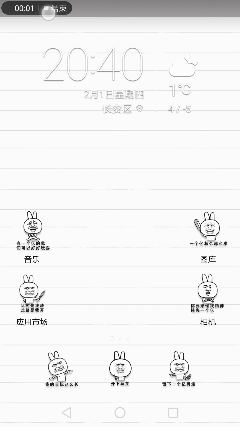

获取工控机IP地址的方案
在进行远程控制之前，我们需要在.bashrc文件里面填写运行Master节点的工控机的IP地址，只有IP地址写对了，两台电脑上的节点才能正常通信。
方案一：工控机上读取
将工控机接上显示器和键盘，打开终端，输入：
ifconfig
会显示如下信息
eth0 Link encap:以太网 硬件地址 80:fa:5b:2a:c8:41
inet6 地址: fe80::82fa:5bff:fe2a:c841/64 Scope:Link
UP BROADCAST RUNNING MULTICAST MTU:1500 跃点数:1
接收数据包:1711 错误:0 丢弃:1 过载:0 帧数:0
发送数据包:2018 错误:0 丢弃:0 过载:0 载波:0
碰撞:0 发送队列长度:1000
接收字节:605189 (605.1 KB) 发送字节:353539 (353.5 KB)
lo Link encap:本地环回
inet 地址:127.0.0.1 掩码:255.0.0.0
inet6 地址: ::1/128 Scope:Host
UP LOOPBACK RUNNING MTU:65536 跃点数:1
接收数据包:2027 错误:0 丢弃:0 过载:0 帧数:0
发送数据包:2027 错误:0 丢弃:0 过载:0 载波:0
碰撞:0 发送队列长度:1
接收字节:12736730 (12.7 MB) 发送字节:12736730 (12.7 MB)
wlan0 Link encap:以太网 硬件地址 00:1e:64:f0:23:37
inet 地址:10.25.57.81 广播:10.25.63.255 掩码:255.255.192.0
inet6 地址: fe80::21e:64ff:fef0:2337/64 Scope:Link
UP BROADCAST RUNNING MULTICAST MTU:1500 跃点数:1
接收数据包:47 错误:0 丢弃:0 过载:0 帧数:0
发送数据包:177 错误:0 丢弃:0 过载:0 载波:0
碰撞:0 发送队列长度:1000
接收字节:10609 (10.6 KB) 发送字节:28519 (28.5 KB)
因为一般工控机是连接的无限网络，所以主要看wlan这边的信息（注意：有些电脑的无线网卡名称不是wlan，而是wlp60s0）。在对应的信息部分找到inet addr：xxx.xxx.xxx.xxx就是对应的IP地址。
方案二：网页上读取
如果你使用的是无线路由器建立的无线网络而且你是路由器的管理员，那么建议你使用这种方法，因为可以不用接显示器和键盘就可以知道IP。
方法：在浏览器登录到设置wifi网络的网页，如192.168.1.1，tplogin.cn等，就可以通过浏览器登录到路由器后端，通过查看已连接设备的信息看到工控机的IP地址。
方案三：手机上查看
如果你是用手机建立的无线网络，可以在手机上查看工控机的IP地址。
具体操作是：设置 -> （更多） -> 移动网络共享 -> 便携式WLAN热点 -> 管理设备列表，在已连接设备中找到工控机，“192.168.xx.xx”就是工控机的IP。
